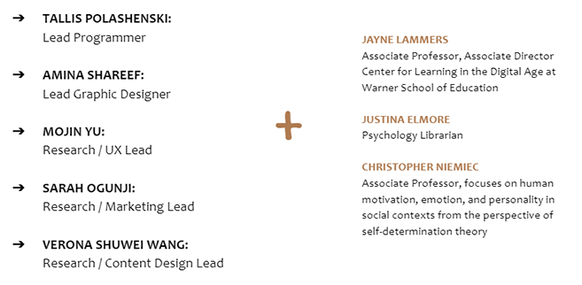
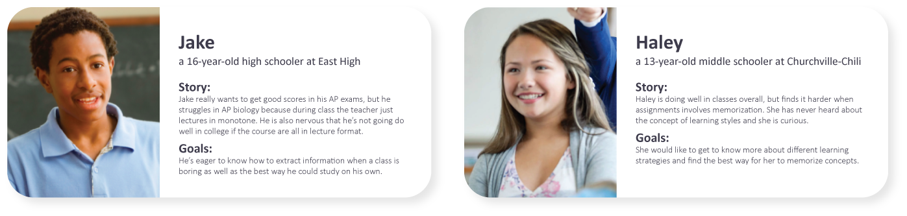
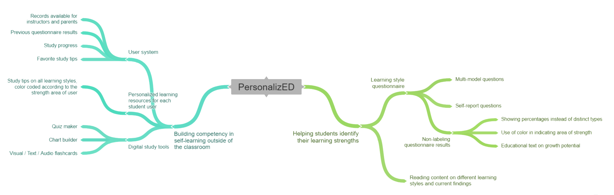
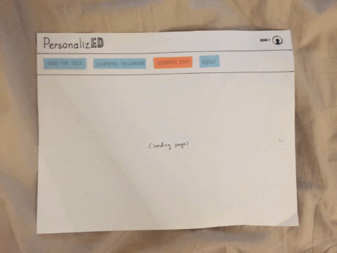
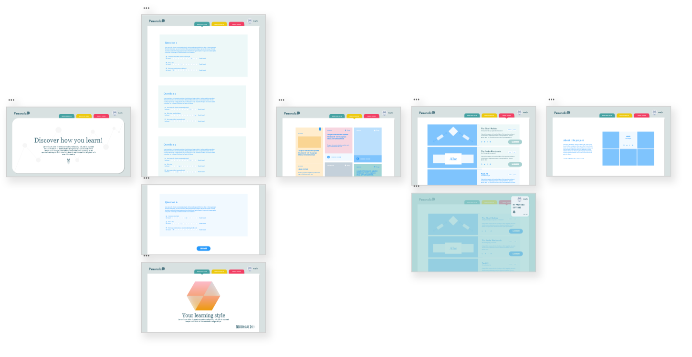

About This Project
PersonalizED is an online platform that helps students between age 12-18 discover their learning strengths and build study skills that work best for them. It is a Digital Media Studies senior capstone project which I worked on in a team of five.

Background
Current research in psychology has identified three main learning styles:
Auditory, Visual, and Kinesthetic (or hands-on).
United States classrooms predominantly depend upon the auditory learning style. When students go home to study or do homework, they adhere to the same method of learning they see in class - this isn’t as beneficial to those who are not strongest in auditory learning.
From personal experiences and interactions with the pre-college program students on campus, we see many students are unaware of their learning strengths or different study techniques that may help them study on their own. This where PersonalizED comes in.
Research
Secondary research - Psychology / Education literature review
We started out the project by reviewing the current literature in the fields of psychology and education. We have looked into research studies on different learning theories and gathered peer-reviewed materials that could be used as our content foundation.
Key takeaways:
- Learning is best enhanced through feedbacks on the effectiveness of learning efforts.
- An educational product/service should avoid labeling or categorizing students.
- Scholars have developed self-reporting questionnaires that could identify an individual’s learning style and strength, but our team needs further guidance on how to integrate a questionnaire into our product so that it works best for students.
Secondary research - Competitive Analysis
We looked into the market to examine whether existing products can help students identify their learning strength or help them study through the exploration of different learning skills. The analysis also informed our product by allowing us to see what was possible, what are useful features as well as the type of opportunity areas were available.
We found that:
- Products such as VARK and Education Corner offer questionnaires that identify user’s learning strength, but the visual representations are not tailored to younger users.
- On VARK and Education Corner, the questionnaires only consist of multiple-choice questions. There’s no room for flexible responses.
- Study tips are generally divided into categories (by learning styles), and it is hard for students navigate across the categories on these platforms.
- Quizlet and Kahoot allows users to create their own profile so that their activities and progress are recorded over time. This is a feature that our team hopes to integrate into our product.
Primary research
We conducted further research to better understand our audience and their needs and preferences. This includes meeting with stakeholders, including school teachers and parents, as well as our main user group, junior and senior highschool students. Additionally, we reached out to faculties in the psychology and education departments and discussed our project plan with them.
Persona
To better guide our design and enable everyone on the team to empathize with our users, I synthesized our interview findings and came up with the following personas:

Design
With our research findings and personas in mind, our team members came up with ideas and discussed their implementation feasibility. In the end we mapped out the key functions and components of our product:
Sketches & Wireframes
I created a rough sketch of these functionalities on a low fidelity prototype, and shared it with the team to make sure that everyone's on the same page.

Following the first sketch, I made product wireframes to better visualize the product architecture and to bring to our potential users for testings and feedback.

The Next Steps
Our team will be conducting user testings with local students to find out what they consider the most valuable parts of our product to be. We will also be collecting user feedbacks on the design and interactions on our product, and using these insights as guidance to make further prototype iterations in higher fidelity. At the meantime, we are working with our advisors to finalize the academic/educational text contents for our product.